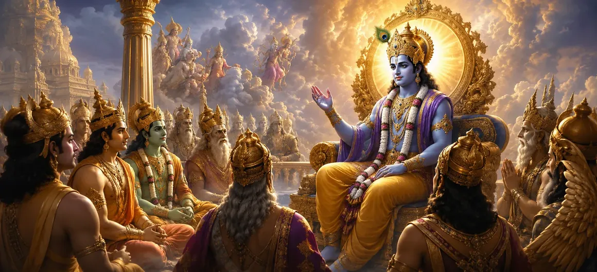

इस अध्याय में वर्णन किया गया है कि जब दक्ष के यज्ञ में भय और अनिश्चितता फैल गई तो भगवान विष्णु ने देवताओं को कैसे संबोधित किया। अशुभ संकेतों को देखकर और भगवान शिव के प्रति दक्ष के अपराध की गंभीरता को समझते हुए, विष्णु ने ब्रह्मांडीय व्यवस्था और ब्रह्मांडीय सद्भाव के सिद्धांतों को समझाया। उनके शब्दों ने देवताओं को याद दिलाया कि अहंकार पतन की ओर ले जाता है, जबकि विनम्रता और ईश्वर के प्रति श्रद्धा शांति और धर्म को बनाए रखती है।
जैसे-जैसे आसन्न आपदा के संकेत बढ़ते गए, देवता अत्यधिक चिंतित हो गए। कई लोगों को एहसास हुआ कि दक्ष के कार्यों के परिणामों को अब टाला नहीं जा सकता। मार्गदर्शन और आश्वासन की तलाश में, वे ब्रह्मांडीय संतुलन के संरक्षक भगवान विष्णु की ओर मुड़े।
भगवान विष्णु ने समझाया कि ब्रह्मांड सत्य और धर्म के शाश्वत सिद्धांतों के अनुसार संचालित होता है। कोई भी व्यक्ति, स्थिति या शक्ति की परवाह किए बिना, परिणामों का सामना किए बिना इन पवित्र कानूनों का उल्लंघन नहीं कर सकता है। उन्होंने इस बात पर जोर दिया कि दक्ष द्वारा भगवान शिव के प्रति अनादर ने ब्रह्मांड के सामंजस्य को बाधित कर दिया था।
विष्णु ने एकत्रित देवताओं को ब्रह्मांडीय क्रम में शिव की सर्वोच्च स्थिति की याद दिलाई। उन्होंने बताया कि शिव को ऋषियों, देवताओं और दिव्य प्राणियों द्वारा समान रूप से सम्मानित किया जाता है। ऐसे दिव्य प्राणी का अनादर करना न केवल एक व्यक्तिगत अपराध था, बल्कि पवित्र व्यवस्था की नींव के लिए एक चुनौती थी।
भगवान विष्णु ने सिखाया कि अहंकार अक्सर व्यक्तियों को सत्य और ज्ञान से अंधा कर देता है। दक्ष का पतन बाहरी घटनाओं से नहीं बल्कि उनके हृदय में भरे अहंकार से शुरू हुआ। विष्णु ने देवताओं से सभी परिस्थितियों में विनम्र और धर्म के प्रति समर्पित रहने का आग्रह किया।
आध्यात्मिक सद्भाव बनाए रखने के लिए ईश्वर के प्रति श्रद्धा आवश्यक है।
ब्रह्मांड शाश्वत सिद्धांतों द्वारा शासित होता है जो सत्य और धर्म को कायम रखते हैं।
विनम्रता व्यक्तियों को अहंकार के विनाशकारी प्रभावों से बचाती है।
विष्णु का मार्गदर्शन सुनने के बाद, देवताओं ने अपने चारों ओर घट रही घटनाओं पर गहराई से विचार किया। उन्होंने उसके शब्दों में सच्चाई को पहचाना और समझा कि आसन्न टकराव पहले से ही निर्धारित कार्यों का परिणाम था।
यद्यपि विष्णु ने ज्ञान और स्पष्टता प्रदान की, दक्ष के बलिदान को लेकर तनाव बना रहा। देवताओं को पता था कि नियति तेजी से आ रही है, और वे उस दिव्य न्याय के प्रकट होने की प्रतीक्षा कर रहे थे जिसकी भविष्यवाणी की गई थी।
भगवान विष्णु की शिक्षाएँ हमें याद दिलाती हैं कि विनम्रता, श्रद्धा और सत्य का पालन आध्यात्मिक जीवन की नींव हैं। जब अभिमान निर्णय पर हावी हो जाता है, तो दुख आता है। ईश्वर का सम्मान करने और धर्म के अनुसार जीवन जीने से, व्यक्ति खुद को ब्रह्मांड के शाश्वत सामंजस्य के साथ जोड़ लेते हैं।
भगवान विष्णु ने देवताओं को याद दिलाया कि ईश्वर पूर्ण सामंजस्य में कार्य करता है। यद्यपि विभिन्न देवता अलग-अलग ब्रह्मांडीय भूमिकाएँ निभाते हैं, वे ब्रह्मांड को बनाए रखने में एकजुट हैं। ईश्वर के एक पहलू का अनादर करना उस संतुलन को बाधित करना है जो सृष्टि को संरक्षित करता है। इस शिक्षण के माध्यम से, विष्णु ने देवताओं के बीच मौजूद पवित्र एकता पर जोर दिया।
चूँकि यज्ञ के चारों ओर अनिश्चितता थी, विष्णु ने शांत रहने और ज्ञान द्वारा निर्देशित होने के महत्व को प्रदर्शित किया। डर के साथ प्रतिक्रिया करने के बजाय, देवताओं को सामने आने वाली घटनाओं के पीछे के गहरे आध्यात्मिक पाठों को समझने के लिए प्रोत्साहित किया गया। सच्चा ज्ञान व्यक्ति को तात्कालिक परिस्थितियों से परे देखने और दिव्य उद्देश्य के कार्यों को पहचानने की अनुमति देता है।
"विनम्रता सद्भाव को बरकरार रखती है, जबकि अभिमान अपने पतन को आमंत्रित करता है।"
सती खण्ड की पवित्र घटनाओं की खोज जारी रखें क्योंकि भगवान विष्णु दिव्य ज्ञान के साथ देवताओं का मार्गदर्शन करते हैं और जल्द ही दक्ष के बलिदान के नाटक के बीच शक्तिशाली वीरभद्र के सामने आते हैं।